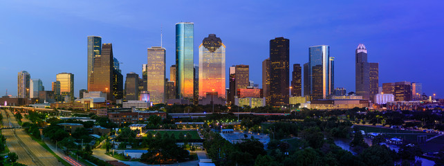
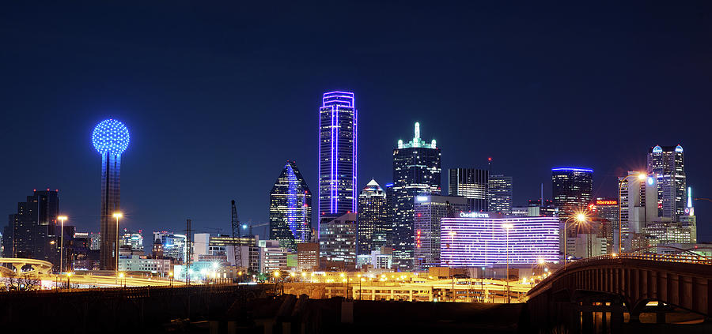

Author Info.
Hi! My name is Aparna. I live in Houston, TX, USA.
What do I do?
When I'm not traveling, I perform duties as one of the following -- Software Developer
- GDG Houston Co-Organizer
- WTM Ambassador
Houston
Home
, May 1, 2020

Houston is a large metropolis in Texas, extending to Galveston Bay. It’s closely linked with the Space Center Houston, the coastal visitor center at NASA’s astronaut training and flight control complex. The city’s relatively compact Downtown includes the Theater District, home to the renowned Houston Grand Opera, and the Historic District, with 19th-century architecture and upscale restaurants.
Comprising a total area of 637.4 square miles (1,651 km2),[6] Houston is the eighth most expansive city in the United States (including consolidated city-counties). It is the largest city in the United States by total area, whose government is not consolidated with that of a county, parish or borough. Though primarily in Harris County, small portions of the city extend into Fort Bend and Montgomery counties, bordering other principal communities of Greater Houston such as Sugar Land and The Woodlands.
Dallas
A little away from home
, May 7, 2020

Dallas, a modern metropolis in north Texas, is a commercial and cultural hub of the region. Downtown’s Sixth Floor Museum at Dealey Plaza commemorates the site of President John F. Kennedy’s assassination in 1963. In the Arts District, the Dallas Museum of Art and the Crow Collection of Asian Art cover thousands of years of art. The sleek Nasher Sculpture Center showcases contemporary sculpture.
Dallas and nearby Fort Worth were initially developed due to the construction of major railroad lines through the area allowing access to cotton, cattle and later oil in North and East Texas. The construction of the Interstate Highway System reinforced Dallas's prominence as a transportation hub, with four major interstate highways converging in the city and a fifth interstate loop around it. Dallas then developed as a strong industrial and financial center and a major inland port, due to the convergence of major railroad lines, interstate highways and the construction of Dallas/Fort Worth International Airport, one of the largest and busiest airports in the world.[13] In addition, Dallas has DART (Dallas Area Rapid Transit) with different colored train lines that transport throughout the metroplex.